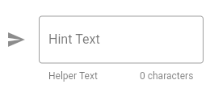
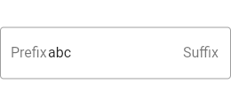
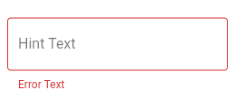

The widget TextField is not a native flutter widget. But rather a Material Widget that implements EditableText widget. The TextField Widget gives you material look and feel. You can customize the widget in various way. To customize the TextField widget you need to use InputDecoration class. In this secton we will explore various way to customize the TextField widget.
You can customize the border in various way. Different border can be set for different state of the TextField. For example, when there is an error you can specify a differnt border style, or when there is a focus on the TextField you can also set different styled border. Here are the properties you can use for customizing the border.
The shape of the border to draw around the decoration's container.
The border to display when the InputDecorator is disabled and is not showing an error.
The border to display when the InputDecorator is enabled and is not showing an error.
The border to display when the InputDecorator does not have the focus and is showing an error.
The border to display when the InputDecorator has the focus and is not showing an error.
The border to display when the InputDecorator has the focus and is showing an error.
Label is shown at the middle of the TextField vertically and on the left side horizontally. A label also overlaps suffix, suffixIcon and suffixText(suffix area). When you tap on the TextField the label shrinks in size and floats above the editable area and makes the suffix area visible. You can made the label always float so that the suffix area can be visible by default. Here are the options through which you can customize the label.
Text that describes the input field. The label can be made to float when user taps on the TextField. Unlike hint the label doesn't dissapear.
To style the label use labelStyle property. Use TextStyle to provide the style.
Defines how the floating label should be displayed.
When FloatingLabelBehavior.auto the label will float to the top only when the field is focused or has some text content, otherwise it will appear in the field in place of the content. This is default.
When FloatingLabelBehavior.always the label will always float at the top of the field above the content.
When FloatingLabelBehavior.never the label will always appear in an empty field in place of the content.
Hint text appears right on the editable text area. When you tap on the TextField the label floats above and it makes the hint text Visible. Hint text appears after the suffix area. The HintText is visible only when there is no text in the TextField. When you start typing the hint text dissapears. It works like a placeholder in HTML input. To customize the hint text you can use following properties:
The style to use for the hintText.
Text that suggests what sort of input the field accepts.
The maximum number of lines the hintText can occupy.
Error text appears below the text input. You can use this field to show some validation error and any kind of other information. To customize the error text use the following propertes:
Text that appears below the input child and the border.
The style to use for the errorText.
The maximum number of lines the errorText can occupy.
Helper text appears below the TextField, where the error text is shown. You can set helper text to provide additional information about the input. You can use following properties to customize the helper text:
Text that provides context about the input child's value, such as how the value will be used. If non-null, the text is displayed below the input child, in the same location as errorText. If a non-null errorText value is specified then the helper text is not shown.
The style to use for the helperText.
The maximum number of lines the helperText can occupy.
To set padding use contentPadding property.
The padding for the input decoration's container.
contentPadding: EdgeInsets.fromLTRB(12, 12, 12, 12),
To set an icon for the input field, use icon property.
An icon to show before the input field and outside of the decoration's container. A collapsed decoration cannot have labelText, errorText, an icon.
If you want to have a background color, you must set filled property to true, and then set the color using fillColor property.
The base fill color of the decoration's container color. That means the background color of the TextField.
If true the decoration's container is filled with fillColor.
You can provide a preffix icon that appears at the very first place of the input line. After the preffix icon, you can place a custom widget known as preffix widget and then you can insert a preffix text. Use the following properties to customize preffix.
An icon that appears before the prefix or prefixText and before the editable part of the text field, within the decoration's container.
The constraints for the prefix icon. You can provide a BoxConstraints for the prefixIcon through this property.
Optional widget to place on the line before the input.
Optional text prefix to place on the line before the input.
The style to use for the prefixText.
In suffix area, the custom widget comes first, then the suffix text is placed and then at the end the suffix icon is placed. Use the following properties to cusstomize the suffix.
Optional widget to place on the line after the input.
Optional text suffix to place on the line after the input.
The style to use for the suffixText.
An icon that appears after the editable part of the text field and after the suffix or suffixText, within the decoration's container.
The constraints for the suffix icon. You can provide a BoxConstraints for the suffixIcon through this property.
Counter text appears below the text field and on the right side. To customize counter use the following properties:
Optional custom counter widget to go in the place otherwise occupied by counterText. If this property is non null, then counterText is ignored.
Optional text to place below the line as a character count.
The style to use for the counterText.
When the TextField is disabled, you should also set enabled property of InputDecoration to false to maintain the visual display. When the enabled property is set to false, the helperText, errorText and counterText are not displayed.
If false, helperText, errorText, and counterText are not displayed, and the opacity of the remaining visual elements is reduced.
Widget build(BuildContext context) {
return TextField(
decoration: InputDecoration(
icon: Icon(Icons.send),
hintText: 'Hint Text',
helperText: 'Helper Text',
counterText: '0 characters',
border: const OutlineInputBorder(),
),
);
}
The above code will produce the following output:

Widget build(BuildContext context) {
return TextFormField(
initialValue: 'abc',
decoration: const InputDecoration(
prefix: Text('Prefix'),
suffix: Text('Suffix'),
border: OutlineInputBorder(),
),
);
}

Widget build(BuildContext context) {
return TextField(
decoration: InputDecoration(
hintText: 'Hint Text',
errorText: 'Error Text',
border: OutlineInputBorder(),
),
);
}
